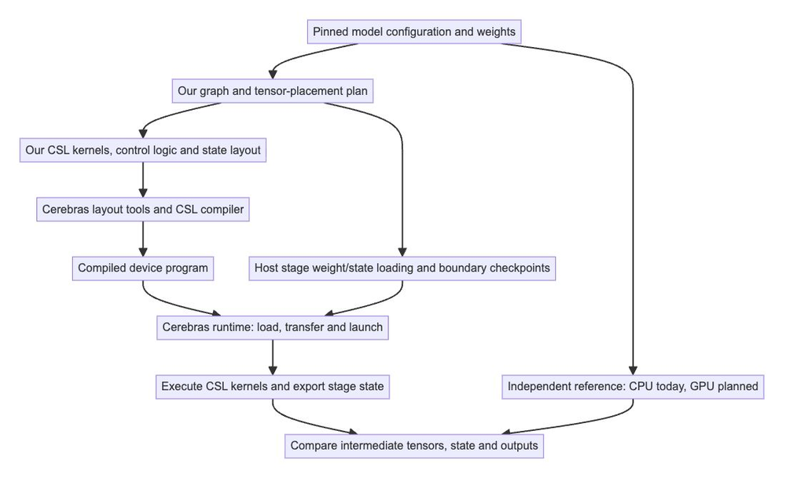

BioWorkflow-Gym
An environment for long-horizon agents to construct and execute bioinformatics workflows, grounded in peer-reviewed Galaxy IWC workflows.
I'm a PhD candidate in Computational Applied Mathematics at Stony Brook University. I work on distributed systems for long-horizon scientific agents, local agents, and anti-forgetting.
My research combines agentic reinforcement learning with systems for building, executing, and verifying scientific workflows. I also develop inference software and programming tools for dataflow AI accelerators, including Cerebras CS-3.
I'm affiliated with Stony Brook IACS, the Stony Brook Bioinformatics Lab, and Brookhaven National Laboratory.
PDF,
Uses solution milestones to locate where a model's reasoning stalls, then concentrates teacher feedback on those steps to make long-horizon reasoning training more efficient.

Selects and reweights complementary token-level corrections so a smaller supervision budget can approximate the combined learning signal of full-response teacher feedback.
Studies how agents can lose the ability to improve themselves, and uses Improvement Function Replay to preserve effective improvement strategies while adapting to new tasks.

Uses Shapley values to select a small, complementary set of rollouts, preserving the full group's learning direction while reducing the number of responses used in policy updates.
Compares teacher predictions across different wordings of the same task, retaining shared guidance and useful uncertainty to make student reasoning less sensitive to prompt wording.

An environment for long-horizon agents to construct and execute bioinformatics workflows, grounded in peer-reviewed Galaxy IWC workflows.

A benchmark for evaluating agents on complex workflow graph construction and execution, with verifiable results on the Galaxy platform.

LLM kernels and inference tooling in Cerebras Software Language, exploring full-model inference and disaggregated decoding on Cerebras CS-3.

A dataflow programming toolkit for spatial kernel mapping and communication routing, treating dataflow architectures as general-purpose MIMD accelerators.